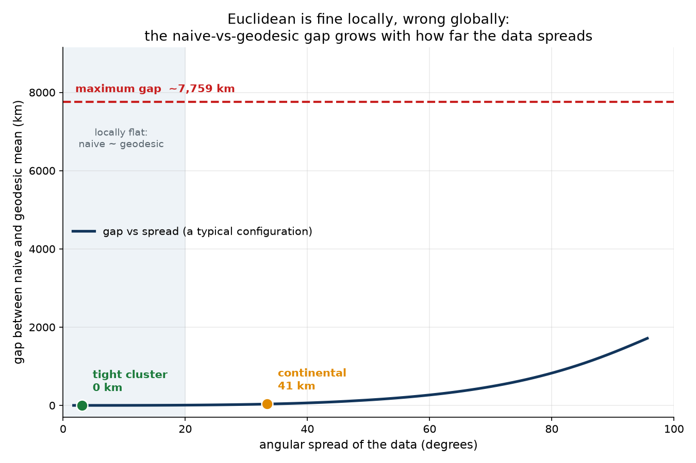
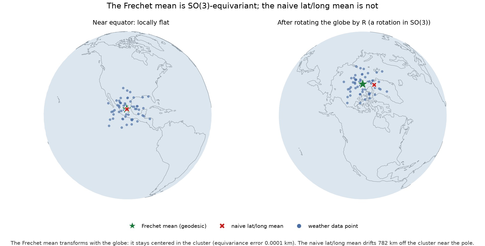
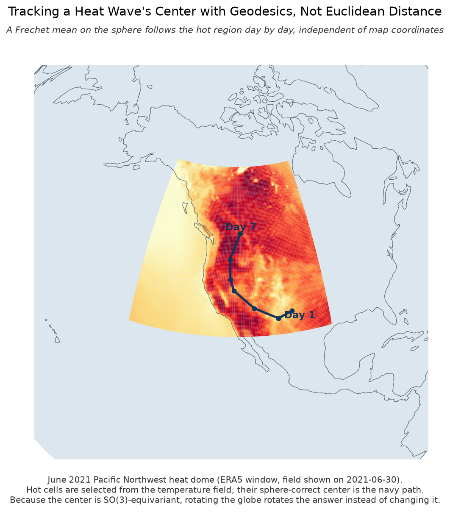
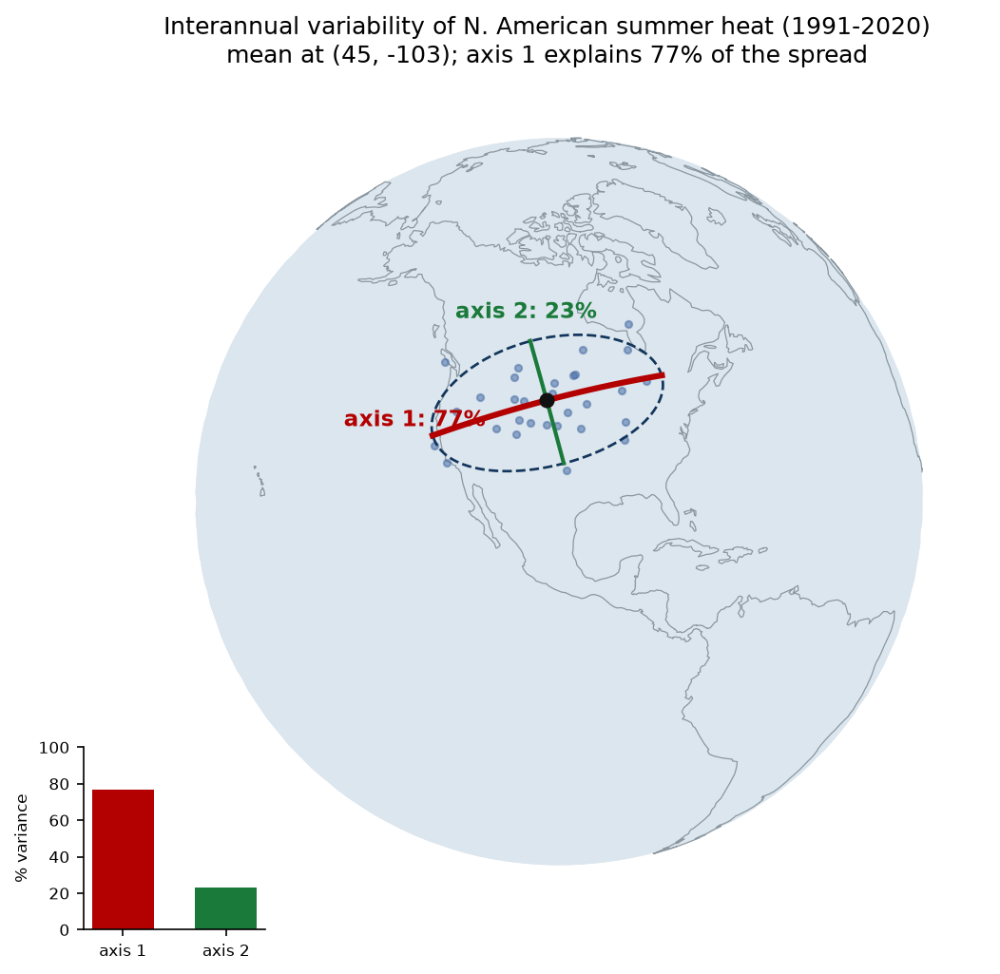

Weather Data Lives on a Sphere.
Our Statistics Should Too.
Using geometry and group symmetry to track heat patterns on Earth
1Weather is a signal on a manifold
A single snapshot of surface temperature assigns one number, degrees, to every location on Earth. Locations live on the sphere; temperatures live on the real line. So the object is a function
$$ x : S^2 \to \mathbb{R}. $$Papillon, Sanborn, Mathe and colleagues give a name to objects like this, a Euclidean-valued signal over a manifold domain (Card S6 in their taxonomy), and their illustration of it is, as it happens, this very temperature-on-a-sphere example from Atmo. The naming earns its keep by isolating what matters: the values are ordinary numbers, but the domain is curved, so any statistic that summarizes where something happens has to respect that curvature.
A second structure hides in plain sight. Where we put longitude zero, and how we orient the globe in space, is arbitrary. Physically rotating the sphere should rotate our description of the field without changing the field's meaning, which is another way of saying the rotation group $SO(3)$ acts on the domain. The paper carries the same temperature example with this rotation action as Card S9, and much of what follows is about building statistics that behave correctly under that action.
Those are two of the paper's three organizing lenses, geometry and algebra. The third, topology, is not needed here, so we leave it out rather than force it.
2The minimal geometry we need
Only a few objects are required. The sphere is the unit sphere in three dimensions,
$$ S^2 = \{\, p \in \mathbb{R}^3 : \lVert p \rVert = 1 \,\}. $$It is a two-dimensional surface: two numbers, such as latitude and longitude, pin any point, even though we write points as three-dimensional unit vectors. The one constraint $\lVert p \rVert = 1$ removes the third degree of freedom.
Distance on the sphere is measured along the surface, not through the interior. The great-circle, or geodesic, distance between two points is
$$ d(p, q) = \arccos\langle p, q \rangle. $$The center of a set of points is the weighted Frechet mean, the point that minimizes the sum of squared geodesic distances to the data:
$$ \mu = \arg\min_{p \in S^2} \sum_i w_i \, d(p, p_i)^2 . $$There is no closed form. It is found by iteration using the exponential and logarithm maps of the sphere: the log map $\log_\mu$ sends sphere points into the flat tangent plane at $\mu$, and the exp map $\exp_\mu$ sends tangent vectors back onto the sphere. One Karcher step averages the data in the tangent plane and moves the estimate along the surface:
$$ v = \frac{\sum_i w_i \log_\mu(p_i)}{\sum_i w_i}, \qquad \mu \leftarrow \exp_\mu(v), $$repeated until $\lVert v \rVert \to 0$. By construction the Frechet mean stays on the manifold, where the ordinary Euclidean average would fall off it, and that contrast is exactly why it is the right notion of center on a curved space (Figure 6 of the paper illustrates precisely this). The same log and exp maps are what later make tangent-space PCA meaningful.
3Geometry: Euclidean shortcuts fail when the sphere matters
The naive alternative to the Frechet mean averages the raw three-dimensional vectors and renormalizes back onto the sphere:
$$ \mu_{\text{chord}} = \frac{\sum_i w_i p_i}{\lVert \sum_i w_i p_i \rVert} \qquad \text{versus} \qquad \mu_{\text{geo}} = \arg\min_{p \in S^2} \sum_i w_i \, d(p, p_i)^2 . $$The chordal mean minimizes straight-line distance through the interior of the ball, not distance along the surface. For a small patch these agree, because a small piece of a sphere is nearly flat. As the data spreads, the chord increasingly short-cuts through the interior and the two answers pull apart.

Three real reference cases anchor the picture:
| data spread | angular size | gap between naive and geodesic mean |
|---|---|---|
| tight cluster (three Texas cities) | ≈ 3° | 0.0 km |
| continental (New York, London, Reykjavik, Lisbon) | ≈ 33° | 40.7 km |
| global spread (near-antipodal) | ≈ 94° | 7,758.9 km |
There is a sharper failure at coordinate seams. If a cluster straddles the ±180° date line, averaging longitudes in degrees gives roughly zero, placing the "center" on the opposite side of the planet. In our benchmark that naive latitude-longitude center lands 17,805 km away from the true Frechet center.
One honest nuance: for a compact, mid-latitude weather feature the gap can be small, tens of kilometers or less. That does not weaken the method. It tells us precisely when the flat approximation is locally adequate and when it is not. The geometry matters in proportion to how much of the globe the data spans, and it matters absolutely at seams and poles.
4Algebra: the answer should rotate with the globe
The reason the Frechet mean has no bad points on the sphere is symmetry. If we rotate the data by a rotation $R \in SO(3)$, a coordinate-free center must rotate by the same $R$:
$$ \mu(\{R p_i\}) = R \, \mu(\{p_i\}). $$This is equivariance under the group action, the algebra lens made concrete. The group is $SO(3)$ rotating the sphere, and a statistic that satisfies this equation depends only on the data on the sphere, not on how we painted latitude and longitude onto it.

The message is not that group theory is elegant. It is that a good statistic respects the symmetries of the physical domain, and that respect is exactly why it stays correct everywhere. The daily centers we extract later are themselves just points on the sphere, and changing the longitude origin is one of these rotations acting on them, so the same equivariance protects the whole pipeline.
Validation: does the math actually check out?
Real weather has no known true center, so correctness is checked on synthetic data with a planted answer, reported here as numbers, not figures.
Frechet mean (tracking).
- Analytic von Mises-Fisher center recovered with 0.00 km error.
- Our from-definition Karcher implementation agrees with GeomStats to $1.90 \times 10^{-4}$ km (about 0.19 m), after tightening GeomStats' optimizer, whose default stops about 2.7 km short. The from-definition version exposed that under-convergence.
- First-order optimality residual $\lVert \sum_i w_i \log_\mu(p_i) \rVert = 5.99 \times 10^{-16}$.
- Planted ten-day trajectory recovered with max error 0.00 km.
Principal Geodesic Analysis (variability).
- Planted principal axis recovered to within 0.73°.
- Our from-definition tangent PCA matches GeomStats TangentPCA, axis difference 0.00°.
- Near a pole, PGA recovers the axis to 0.8° while naive latitude-longitude PCA is off by 39.2°.
- One geodesic axis reconstructs a cloud spread over 53° with 306 km RMS error.
5Application 1: tracking a real heat wave
Now the real data. We track the center of the June 2021 Pacific Northwest heat dome, one of the most extreme heat events on record, using ERA5 2 m temperature over a North America window for June 24 to 30, 2021. Each day:
1. threshold the hottest region from the temperature field (this classifies which
locations are hot);
2. weight each hot cell by its excess heat and by the spherical area element
$\cos(\text{lat})$, which corrects for the fact that a latitude-longitude grid over-samples
the poles;
3. compute the Frechet mean of those locations on $S^2$ (this locates the center);
4. connect the daily centers with geodesic arcs.

The recovered center starts over the US Southwest and marches north to the US-Canada border by June 30, matching the real event, which culminated in record heat in British Columbia. The total Frechet-mean migration is 2,635 km over seven days.
Honest reading: this is a descriptive tracker, not a forecast model, and this particular event is regional and mid-latitude, so the day-to-day naive-versus-Frechet gap is only 13 to 35 km. The value is not a dramatic gap on this one event. It is that the same method stays valid without modification at the seams, poles, and global spreads where the naive tracker fails outright.
6Application 2: interannual variability with PGA
The second application asks a variability question: from summer to summer, where does North America run unusually hot, and is there a dominant direction to how that center moves?
For each summer from 1991 to 2020 we take the ERA5 June-July-August mean temperature, subtract the 30-year climatology to get that summer's anomaly, find the center of the anomalously hot region with the procedure above, and collect the 30 yearly centers as points on $S^2$. We use the anomaly rather than absolute temperature on purpose: absolute summer heat always centers on the Southwest deserts, so its center barely moves, while the anomaly captures the real year-to-year signal.
Then we run Principal Geodesic Analysis, which is simply PCA done the right way on a curved space (the paper's Figure 8 places these tangent-space methods within the wider family of manifold latent embeddings): take the Frechet mean of the 30 centers, map every center into the tangent plane at that mean with the log map, and run ordinary PCA there. The tangent covariance is
$$ C = \frac{1}{N} \sum_i u_i u_i^\top, \qquad u_i = \log_\mu(p_i), $$its eigenvectors are the principal geodesic directions, and the explained-variance ratios are $r_k = \lambda_k / \sum_j \lambda_j$.

The result is a clean, coordinate-free summary of interannual variability:
mean center of anomalous summer heat at $44.8^\circ$N, $102.5^\circ$W; the first geodesic axis explains 77% of the variance and runs roughly east-west; the second axis explains 23%; and the $\pm 2\sigma$ span of the first axis is about 3,894 km.
In plain terms, the region that runs unusually hot in a given summer shifts mostly east or west, far more than north or south. This is a descriptive, not causal, result, and 30 summers is a small sample, but it is a clean methodological example of doing PCA correctly on a curved domain: naive latitude-longitude PCA would distort the axis, badly so at high latitude, as the validation box showed.
7What this contributes, and what it does not
None of the mathematics here is new. What the article does is take the vocabulary of the Beyond Euclid framework and put it to work on real data: temperature as a signal on the sphere, rotations of that sphere as a symmetry worth respecting, extracted centers as points on a manifold, and the Frechet mean and geodesic PCA as the tools that honor both. GeomStats supplies the operations, and writing them out from the definitions did double duty, checking the library and, in one case, surfacing a loose default tolerance in it.
The limits, stated plainly:
- no topology contribution;
- no new theorem;
- no operational forecast, this is reanalysis data and descriptive diagnostics;
- no claim that a single Frechet mean handles multi-center storm fields without first segmenting them.
The value is a reproducible bridge from the paper's structure to a real weather-data workflow: real-data figures, property demonstrations, and ground-truth numerical checks, all runnable.
8Reproducibility
Every figure and number above is regenerated by the accompanying code, and the companion
notebook runs the whole evidence base end to end: you can
view it in the browser with all outputs, or
download the .ipynb and run it yourself
(pip install -r requirements.txt on Python 3.12; in quick mode it reuses the
cached ERA5 files, so no API key is needed). The benchmark suites print the validation
tables; the ERA5 scripts fetch the data (via the Copernicus CDS API) and save the two
real-data figures; the property figures are standalone scripts.
python tool1_centroid_tracker.py # Frechet-mean benchmarks (B1-B6)
python tool3_geodesic_pca.py # PGA benchmarks (B1-B6)
python spread_gap_figure.py # geometry figure
python equivariance_figure.py # group-theory figure
python era5_heatwave.py # heat-dome track + figure (needs CDS API key)
python era5_pga_interannual.py # 30-year PGA + figure (needs CDS API key)References
- M. Papillon, S. Sanborn, J. Mathe, et al. Beyond Euclid: an illustrated guide to modern machine learning with geometric, topological, and algebraic structures. Mach. Learn.: Sci. Technol. 6 031002 (2025). arXiv:2407.09468.
- N. Miolane et al. GeomStats: a Python package for Riemannian geometry in machine learning. JMLR 21(223), 2020. geomstats.github.io.
- N. Guigui, N. Miolane, X. Pennec. Introduction to Riemannian geometry and geometric statistics. Foundations and Trends in Machine Learning, 2023.
- H. Karcher. Riemannian center of mass and mollifier smoothing. Comm. Pure Appl. Math. 30 (1977).
- P. T. Fletcher, C. Lu, S. M. Pizer, S. Joshi. Principal Geodesic Analysis for the study of nonlinear statistics of shape. IEEE Trans. Med. Imaging 23(8), 2004.
- H. Hersbach et al. The ERA5 global reanalysis. QJRMS 146, 2020. Data via the Copernicus Climate Data Store.